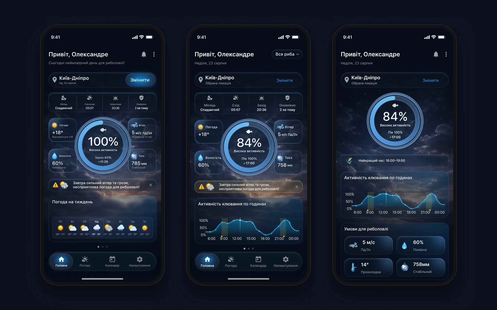
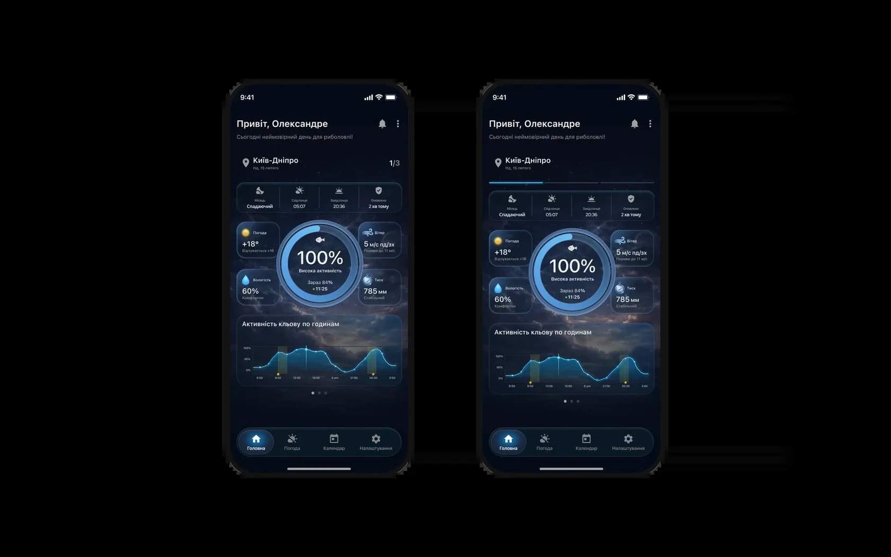
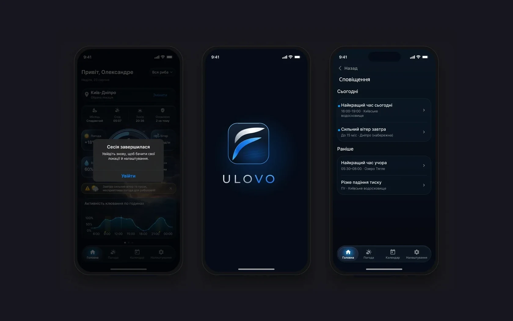

Дані для неї розкидані – погода, вітер, тиск, Місяць, сутінки. Задача – звести їх у прогноз, який читається за кілька секунд, і закрити всі стани реального застосунку. ТЗ не було: вимоги збирала по ходу з замовником і розробником. Тестувань із людьми теж не було, тож рішення спираються на сценарії, обмеження iOS і API погоди.
Структура
Ядро – три вкладки прогнозу: Головна, Погода, Календар. Навколо – вхід, Pro-підписка, профіль і стани, що можуть зʼявитися на будь-якому екрані.
Пейвол відкривається з фільтра риби на Головній, з Календаря і з Налаштувань
Системні стани можуть зʼявитися на будь-якому екрані: сесія завершилася, обовʼязкове оновлення
12 флоу · 86 екранів і станів. Цифра на картці – кількість екранів і станів у флоу.
Головна: відповідь першою
- Чому
- Перша версія суперечила сама собі: «неймовірний день» над попередженням про грозу, на кільці 100% і «Зараз 84%», різний тиск на двох екранах, підписи 6–8 px.
- Що зробила
- Дві версії. A – та сама структура без суперечностей і з текстом від 11 px. B – рішення першим: активність → найкращий час → графік по годинах → умови, без каруселі, що ховала графік.
- Результат
- Головна відповідає на «чи їхати і коли» до будь-якого скролу.
СтатусОбидві версії передала замовнику, напрям йому подобається.

Фільтр риби змінює весь прогноз
- Чому
- Вибір риби міняє розрахунок клювання для всього застосунку, а «Щука» й «Судак» доступні лише з Pro – це треба показати до тапу.
- Що зробила
- Фільтр вгорі Головної замість меню. «Вся риба» – для всіх, платні режими із замком і бейджем Pro. Після покупки режим вмикається одразу, без неї лишається «Вся риба».
- Результат
- Пейвол зʼявляється в момент цінності, а у кожного режиму свій графік і пік: щука вранці й увечері, судак – у сутінках.
СтатусПогоджений напрям, проєкт у роботі.

Прогноз працює біля води, без звʼязку
- Чому
- Прогноз потрібен біля води, де звʼязку часто немає, а геолокацію людина може не дозволити.
- Що зробила
- Кожен основний екран має завантаження, офлайн і помилку. Офлайн показує останній прогноз із часом оновлення, без геолокації водойму обирають пошуком.
- Результат
- Без мережі екран показує останній прогноз і час його оновлення, а не порожню сторінку.
СтатусСтани є на кожному основному екрані макетів.

Дні гортаються свайпом
- Чому
- Розробник запропонував перемикати дні свайпом по Головній, не заходячи в календар. Але сам по собі свайп невидимий: якщо його просто додати, люди не здогадаються, що він є.
- Що зробила
- Два варіанти підказки. A – лічильник «1/3» біля локації і крапки внизу. B – індикатор днів угорі під локацією, як у сторіз: видно, скільки днів доступно і на якому ти зараз. Минулі дні не гортаються, без підписки доступно 3 дні, з Pro – тиждень.
- Результат
- У свайпу зʼявилась видима підказка: індикатор показує, що днів кілька і де ти серед них.
СтатусЗамовник обрав B, я теж радила його.

Стани й система
Налаштування застосовуються одразу, сесія, що завершилася, повертає на вхід із підставленим e-mail, а пуш веде на потрібний екран. UI kit: 4 колекції змінних, 14 текстових стилів на SF Pro, світла тема – перемикання режиму. Фони погоди привʼязані до кодів OpenWeather, тож розробнику не треба вигадувати мапінг. Для iOS-налаштування «Зменшити прозорість» кожна скляна поверхня має непрозорий колір-заміну: варіант із напівпрозорим кольором відкинули, бо система може ігнорувати і прозорість.

- 01
Найскладнішим була ієрархія показників: короткий огляд на Головній, детальний прогноз на «Погоді», а звʼязує їх обрана водойма й день.
- 02
Інтерфейс багато в чому визначали дані: прогноз по годинах приходить із кроком у три години і лише на пʼять днів, температуру води API не віддає – її прибрали, а в клітинку календаря влізла лише іконка погоди.
- 03
Далі – перевірити з рибалками, чи вистачає огляду, щоб вирішити, коли їхати, і чи зрозуміло, як читати активність клювання.